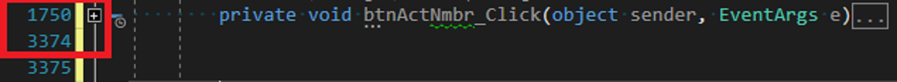
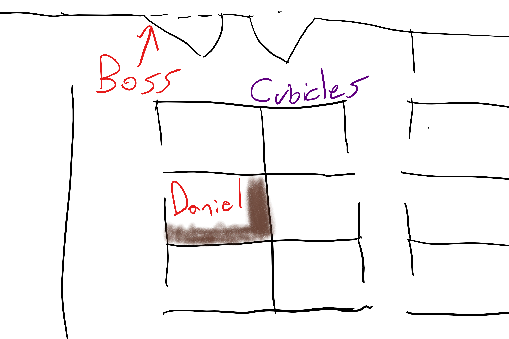

Why should we test code?
Why should we write testable code?
So we don't end up with 1600 line Winform button clicks.
It happens all the time.
Office layout for software department at my first job out of college.
This was typical.
Private Sub btnOrderCreate_Click(sender As object, e As EventArgs) Handles btnOrderCreate.Click
...
If ExecuteSQLInt("SELECT FeatureFlag1 FROM AR_MASTER WHERE AR_ACCT_ID = " + txtBoxAcct1.Text) = 1
And ExecuteSql("UPDATE HR_User Set LastAction = GETDATE() WHERE User_ID = " + txtBoxRep.Text)
And ExecuteSqlString("SELECT PIN FROM HR_USER WHERE User_ID = " + txtBoxRepId.Text) = inputRepPass.Value
Then
...
' Create Order
ElseIf something or other Then
...
Else
...
End If
...
End SubThis happened over 12 years.
Testing this code was a very manual, tedious, and inprecise process.
I haven't listed the other 20,000 lines in this one file.
Did I mention there are hundreds of forms?
The code was too complicated and no separation of concerns made unit tests near impossible.
High-level modules should not depend on low-level modules. Both should depend on abstractions.
Abstractions should not depend on details. Details should depend on abstractions.
Now might be a good time to spoil the ending.
Dependency injection by adding ASP.NET Core Services.
// This method gets called by the runtime. Use this method to add services to the container.
public void ConfigureServices(IServiceCollection services)
{
services.AddMvc().SetCompatibilityVersion(CompatibilityVersion.Version_2_1);
services.AddSingleton<ICacheResults, InMemoryCache>();
}ICacheResults being the interface, InMemoryCache being the concrete implementation
One day I walked into work after a late night deployment...
Microsoft MVP
Website: olivercoding.com
Twitter: @a_software_dev
Github: danieloliver
Slides: https://dotnet-testing-talk.olivercoding.com/